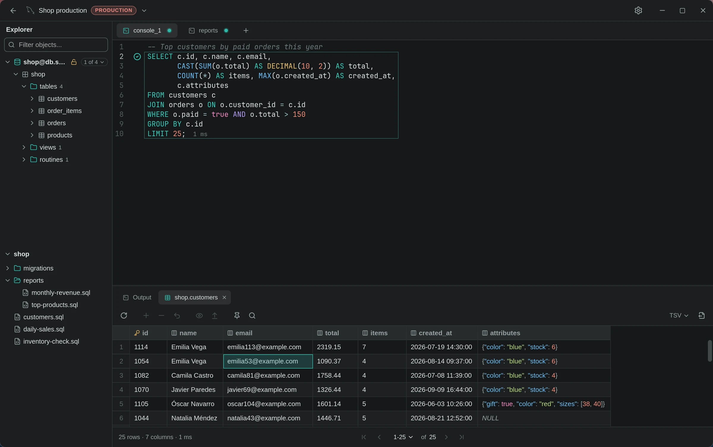

Free & open source SQL client
For Windows, macOS and Linux. No account, no Pro edition. Install it and start querying.

One command and you are in.
Pick your system. Commands point at the latest release.
$ curl -LO https://github.com/anderson-andres-dev/rowly-db/releases/download/v0.2.1/Rowly.DB_0.2.1_amd64.deb $ sudo apt install ./Rowly.DB_0.2.1_amd64.deb
Debian, Ubuntu, Mint, Pop!_OS and friends.
$ sudo dnf install https://github.com/anderson-andres-dev/rowly-db/releases/download/v0.2.1/Rowly.DB-0.2.1-1.x86_64.rpm
Fedora, RHEL, openSUSE.
$ curl -LO https://github.com/anderson-andres-dev/rowly-db/releases/download/v0.2.1/rowly-db_0.2.1_x86_64.pkg.tar.zst $ sudo pacman -U ./rowly-db_0.2.1_x86_64.pkg.tar.zst
Arch, Manjaro, EndeavourOS, Omarchy.
$ curl -LO https://github.com/anderson-andres-dev/rowly-db/releases/download/v0.2.1/Rowly.DB_0.2.1_amd64.AppImage $ chmod +x Rowly.DB_0.2.1_amd64.AppImage $ ./Rowly.DB_0.2.1_amd64.AppImage
Any distro. No install, just run it.
Open the .dmg and drag Rowly DB to Applications.
Run the installer. Both work the same.
Already installed? New versions show up in Settings → Updates.
What you get
rowly@db
--------
- version
- 0.2.1
- license
- MIT or Apache-2.0
- platforms
- windows · macos · linux
- engines
- mysql · mariadb · postgresql
- installer
- 4 – 7 MB
- account
- not required
- updates
- signed, installed from settings
- source
- github.com/anderson-andres-dev/rowly-db
- theme
- rowly · press T
- an editor that knows your schema
- results you edit in place
- changes reviewed as SQL before they run
- passwords in the system keyring
- keyboard first, F1 lists every shortcut
- eight themes, light and dark